Photograph: five members of the team at work in the
wet lab, three around the pressure rig in the foreground and two pipetting
at the cloning bench behind.
Six cloning strategies to get four modules into one plasmid
The light switch this project runs on is four transcription units, and none
of them existed as a part we could order. Getting them built took two
assembly standards, three redesigns of the entry step, and one conversation
with a professor that retired the premise a whole cycle had been run on.
This is that record, cycle by cycle, with the gel behind every claim.
6Cloning cycles
4Level 1 modules, sequence-confirmed
2Junction-checked Level 2 clones
33Figures, all ours
14Sections still unwritten
Drawing
Engineering Success · wet lab
Revision
6 September 2026
Status
Working draft
Scope
Cloning and expression only
01
Fourteen sections are still unwritten, and each one has a name against it
This page is a working draft, put up from the wet lab writing document so
the structure can be argued about while the prose is still being written.
Where a section has not been written yet, the page says so in the place
the section belongs, with the person who owns it. Nothing is filled in
with plausible sentences to hide a gap.
The schedule below is the same information in one list. It comes off the
page before the wiki freeze.
The whole MoClo 2.0 cycle. Two sentences in the overview are all we have: no colonies, and low Golden Gate efficiency. The primer and fragment design that went with it is not written anywhere.
Two things. The second way this module diverges from Castillo-Hair et al. is written as Second… [xxx]. And the design text names sRBS2 and MF002 as the ribosome binding sites while both construct names say RBS0; one of the two is wrong.
Mutation, truncation and codon-optimisation design for the protectants. The dry lab record is on Peptide Design; the wet lab consequence of it is not written here.
Key achievements. The team agreed to write this last, once the cycles are finished. What is there now is drafted from the evidence already on the page.
The protectant is written as (xx) in the source overview. Four candidates were built; ACC deaminase is the one carried forward. The overview should name it and say why.
One reference is entered. The rest go in the shared Zotero library, GEMS-Taiwan 2026 → Wetlab, in APA 7.
EveryoneWhole page
The reactor, photometer and peptide-design cycles were cut from this page when the wet lab took priority. They need a decision: fold them back in as their own sheets, or leave them on Hardware and Peptide Design and link out.
02
Four modules are sequence-confirmed; the Level 2 join is checked at its
junctions only
Claim
Where it is checkable
Four Level 1 modules built and sequence-confirmed pSTK-1A, pSTK-1B, pSTK-1C, pSTK-1D
Colony PCR at the expected size for each, then Sanger sequencing on the picked clones. Sheet 06 has the gel and the clone identifier for every one.
Two Level 2 clones junction-checked
the ACDI assembly, 1 September
Three internal junctions at 375, 632 and 661 bp. The joined construct has not been sequenced end to end, so it is junction-checked and not sequence-verified. Cycle 6.
Seven coding sequences converted into STK-compatible parts
None of ho1:pcyA, ccaSm3, ccaR, csn, ACCD, AmilCP, Lea, EEBD or PcpcG2-veg existed in the kit. Each got a primer pair carrying the same four-element tail. Sheet 03.
The entry step was redesigned three times
Raw PCR product, then pGEM-T Easy, then the kit's own pSTK-0C. Each change has a named cause. Sheet 05.
B. subtilis takes the shuttle vector between 2.0 and 2.3 kV
Six electroporations across two days, counted on plates. Past 2.5 kV the yield collapses. Sheet 07.
Four things this page cannot claim, and says so where they fall
No induction curve exists. Nothing anywhere in our records shows
PcpcG2 output changing with green light. Every statement about
the switch on this page is design intent, and it is written as design
intent.
WB800N against 168 was never run. The strain comparison is in the
plan for the B. subtilis cycle with its learn field blank.
Every transformation number on this page is strain 168.
The 24 August blot reads negative on the culture that was
sprayed. The single band sits in the 18 August lane. The
23 August lane, the material that went onto plants, is empty.
The Level 2 construct has not been sequenced. Three junctions
is enough to say four modules are joined in the right order. It is not
enough to say the joined plasmid carries no mutation.
03
The circuit is four transcription units with a single light gate at the
end
ReLeaf senses stress in a plant, drought or salinity, and turns that signal
into a pulse of green light aimed at a Bacillus subtilis culture in a
bioreactor. The bacteria carry an engineered CcaS/CcaR circuit that answers
green light by making and secreting a protectant, which goes back to the
stressed plant. Making the protectant on demand instead of continuously is
the whole point: it conserves the culture and keeps the reactor from
overgrowing while nothing is wrong with the crop.
Unwritten · everyone
The source overview writes the protectant as (xx). Four cargoes were
built and ACC deaminase is the one carried into reactor and plant testing.
This paragraph should name it and give the reason.
Green light at 535 nm is the only input the bacteria take
The design follows the CcaS/CcaR system described by Haller,
Castillo-Hair and Tabor [1], split into four
transcription units so each part of the signal path can be built, screened
and swapped on its own.
CcaS is a photoreceptor and it cannot see anything without a chromophore.
The first unit makes one. Heme oxygenase, ho1, oxidises heme to
biliverdin; phycocyanobilin:ferredoxin oxidoreductase, pcyA,
reduces biliverdin to phycocyanobilin. In its ground state CcaS absorbs
green light near 535 nm and has low autokinase activity. Absorbing a
green photon switches it to a red-absorbing state near 672 nm with high
autokinase activity, in which it phosphorylates itself on a conserved
histidine and passes the phosphoryl group to CcaR. Phosphorylated CcaR
drives transcription from PcpcG2. Red light returns CcaS to the
ground state and transcription stops.
Unit
Job
Level 1 vector
Built as
1 · PCB production
Makes the chromophore CcaS needs
pSTK-1A-sfGFP
PtagC+RBS – ho1:pcyA – L3S2P21
2 · Light sensing
Absorbs the green photon and autophosphorylates
pSTK-1B-sfGFP
PliaG – RBS0 – ccaSm3 – B0015
3 · Transcriptional output
Receives the phosphoryl group and binds its promoter
pSTK-1C-sfGFP
Pveg – RBS0 – ccaR – B0015
4 · Output
The only light-gated unit: makes and exports the cargo
pSTK-1D-sfGFP
PcpcG2-veg – EEBD – RBS0 – csn:cargo – B0015
Units 1 to 3 run off constitutive promoters and are on all the time. That is
deliberate. A sensor that has to be induced before it can sense adds a second
input to a system whose whole argument is that light is the only input.
MoClo 2.0 returned no colonies, so the whole build moved to the SubtiToolKit
The circuit was first designed to the MoClo 2.0 standard as whole-gene
synthesis. Transformation produced no colonies and Golden Gate efficiency
stayed low. A professor supplied the SubtiToolKit, a Golden Gate kit built
for B. subtilis by the authors of the system we were copying, and
every subsequent cycle on this page is inside that kit. The MoClo constructs
did not go to waste: they became the templates the STK-compatible parts were
amplified off.
Every part we added to the kit carries the same four-element primer tail
The kit ships promoters, ribosome binding sites and terminators. It does not
ship ho1:pcyA, ccaSm3, ccaR, the
secretion peptides or any of the protectants. Each of those had to be turned
into a Level 0 part, and every primer that did it is built the same way, so one explanation
covers all of them.
Element
Sequence
What it does
5′ spacer
ATATAT
Gives the restriction enzyme something to bind to near the end of a linear fragment, so the cut is efficient.
BpiI site
GAAGAC
Level 0 entry into pSTK-0. BpiI cuts outside its own recognition sequence, so digestion leaves a 4 bp overhang that directs the fragment into the backbone and takes the tail with it.
BsaI site
GGTCTC
Level 1 assembly. BsaI generates the inner 4 bp overhang, and that overhang is what fixes the part’s position and orientation inside the Level 1 vector.
Annealing region
part-specific
Matches the start codon or the 3′ end of the coding sequence.
The two enzymes are not interchangeable and the order matters. BpiI is used
only for Level 0 entry, where it excises the tail entirely and drops the
fragment into pSTK-0 in place of the sfGFP dropout cassette.
BsaI is used only at Level 1, where the second overhang it exposes
decides which slot the part lands in. On Ho1 F that inner
overhang is TATG, which carries the start codon of
ho1 inside it; on pcyA R it is
TGTC, the junction every coding sequence on this page uses to
meet its terminator.
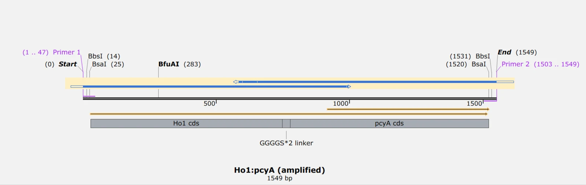
Figure 1. The ho1:pcyA amplicon, 1,549 bp. The
tail architecture is visible at both ends: BpiI (shown as its isoschizomer
BbsI) outermost at 14 and 1,531, BsaI inside it at 25 and 1,520. The
(GGGGS)×2 linker joins the two coding sequences.
Cropped to the map and scaled. No other adjustment.
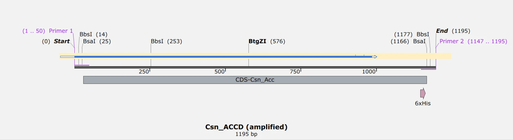
Figure 2. The csn:ACCD amplicon, 1,195 bp, with
the same tail at both ends and the 6×His tag inside the 3′
end. The secretion peptide and the protectant are amplified as one part.
The fusion cannot come out of the assembly in the wrong order.
Cropped to the map and scaled. No other adjustment.
04
Three assembly levels, two enzymes, and a dropout cassette that comes out at each step
Figure 3. Read it from the bottom. Every part at Level 0 sits in
pSTK-0 under chloramphenicol; nine of them did not exist in the
kit and we amplified them ourselves. BsaI joins parts into modules, BpiI joins
modules into the circuit, and at each step an sfGFP dropout cassette leaves the destination vector, so
a white colony on a blue plate is the first thing we look at. The dashed branch to pSTK-EXP1 is the same
cargo built without the light gate, so a protectant result there has one
explanation fewer to rule out. The greyed box at the top is the induction run
that has not happened.
05
Only two of the six cloning cycles changed the DNA design
Cycle 1 · Chloe
The ring turns to the cycle you are reading. Its loop runs clockwise from
Design at the top, and the quarter that lights is the step on screen.
The four modules share a promoter, a ribosome binding site and a terminator between them. They were never
cloned one at a time. Each cycle below is a
change to the cloning strategy applied to all four at once, which is why the
cycles are numbered across the circuit and not within a module. What each
cycle produced for a particular module is on Sheet 06.
01
MoClo 2.0 returned no colonies, and the kit that replaced it came from the authors of the system
Chloe · unwritten
ResultTransformation produced no colonies and Golden Gate efficiency stayed low.Changed nextThe whole build moved into the SubtiToolKit.
Named failure
Unwritten · Chloe
This cycle exists on the page as two sentences from the overview. The
design of the circuit under MoClo 2.0, the primer and fragment
design that went with it, the Golden Gate conditions and the plates
that came back empty all need writing. The four fields below are the
shape it should take.
DesignThe circuit as whole-gene synthesis
Four modules designed to the MoClo 2.0 standard, with the
coding sequences ordered as synthesised genes. Primers and fragment
boundaries were designed against that standard.
BuildGolden Gate on all four modules
Golden Gate assembly of the four modules under MoClo 2.0.
TestNothing came up on the plates
Transformation revealed no colonies and assembly efficiency was low.
The gel electrophoresis results for this cycle have not been placed
on the page.
LearnThe standard was the bottleneck, and the replacement arrived by luck
MoClo 2.0 turned out to be hard to land in
B. subtilis, and the fix came from outside the team: a
professor connected to the original paper supplied the
SubtiToolKit. That is worth recording as luck, because a plan that
depends on it is not a plan.
02
With BsaI-only primers, a failed assembly and a PCR
artefact look the same on the gel
Chloe · unwritten
ResultColonies came up, and gave inconsistent or unconfirmed screens.Changed nextVerify the donor before assembling with it.
Named failure
Unwritten · Chloe
The first SubtiToolKit cycle. The design brief says the primers
carried only the BsaI site at this stage, and the build was Golden
Gate assembly of all four modules straight into their Level 1
vectors. The gels and the reason the screens were ambiguous need
writing.
DesignFollow the kit, and design only the BsaI site
The kit’s own syntax was adopted unchanged. Primers were
designed with the BsaI site alone, entering Level 1 directly
from PCR product with no Level 0 step in between.
BuildGolden Gate on all four modules, inside the kit
Golden Gate assembly of the four modules using the SubtiToolKit.
TestColony PCR, and results that could not be resolved
Colonies appeared and the screens were inconsistent. Because the
donor going into the reaction was a raw PCR product, a wrong band
could be a failed assembly or an artefact of the amplification, and
nothing in the screen distinguished the two.
LearnAn unverified donor makes every downstream failure ambiguous
The next three cycles are all attempts to fix this one problem: get
a donor into the Golden Gate reaction whose sequence is already
known.
03
A pGEM-T Easy intermediate costs a day and removes the ambiguity
Sophie C
ResultSeven coding sequences cloned, screened and sequence-confirmed before any Golden Gate reaction.Changed nextA marker clash nobody had checked for.
Closed
DesignOptimise the workflow, and leave the genetics alone
The part composition of every module stayed exactly as it was. Only the route into the vector changed.
After cycle 2 the focus moved off the genetic architecture of
the modules and onto the SubtiToolKit workflow itself. The BsaI-only Level 1 entry had produced colonies whose
screens could not be resolved. The cloning strategy went back to
the PCR and vector-entry stage, ahead of the Level 1 Golden
Gate.
BuildTA cloning into pGEM-T Easy, then sequence, then assemble
Each module’s coding sequence was amplified by PCR and the
amplicon cloned into pGEM-T Easy. The vector is supplied
pre-linearised with single 3′-thymidine overhangs, which pair
with the single 3′-adenosine overhangs that Taq and other
non-proofreading polymerases leave on a PCR product. The amplicon
therefore ligates straight in, with no end-polishing, no restriction
digest and no blunting.
A plasmid is also easier to work with than a linear fragment. A
pGEM-T Easy clone can be purified reliably, screened by colony
PCR and sequence-confirmed before it ever meets the BpiI and BsaI
digestion-ligation reactions, which keeps an uncharacterised PCR
error from propagating into every downstream assembly.
TestColony PCR between the T7 and SP6 promoters
Colonies were screened by colony PCR and run against a ladder. The
correct band is the distance between the T7 and SP6 promoters that
flank the insertion site, so a single clean band at that size says a
fragment of the right length went in at the right place. Three
outcomes were scored negative and excluded: no band at all, a band at the size of the empty vector, meaning the vector
self-ligated, and a band at any other size, meaning a truncated or
mis-primed amplicon.
Set
Insert
Expected
A
pGEM-Teasy-Csn:Lea
811 bp
B
pGEM-Teasy-Csn:AmilCP
1,000 bp
C
pGEM-Teasy-Csn:Accd
1,372 bp
D
pGEM-Teasy-CcaSm3
1,642 bp
E
pGEM-Teasy-CcaR
937 bp
F
pGEM-Teasy-Ho1:pcyA
1,726 bp
G
pGEM-Teasy-PcpcG2-veg
412 bp
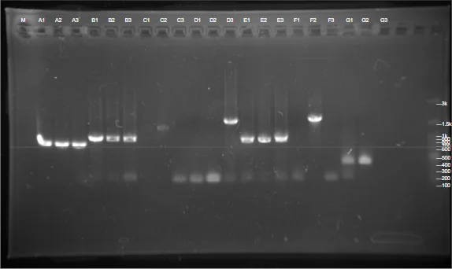
Figure 4. 1 July 2026. All seven pGEM-T Easy sets
on one gel, screened with the T7 and SP6 promoter primers.
Cropped to the gel and scaled. No other adjustment.
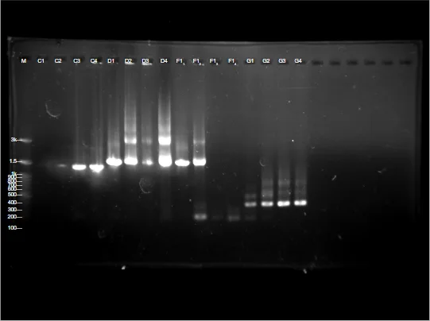
Figure 5. 3 July 2026. The Csn:ACCD, CcaSm3, Ho1:pcyA
and PcpcG2-veg sets, rescreened. The F1 lanes are the
chromophore operon at 1,726 bp.
Cropped to the gel and scaled. No other adjustment.
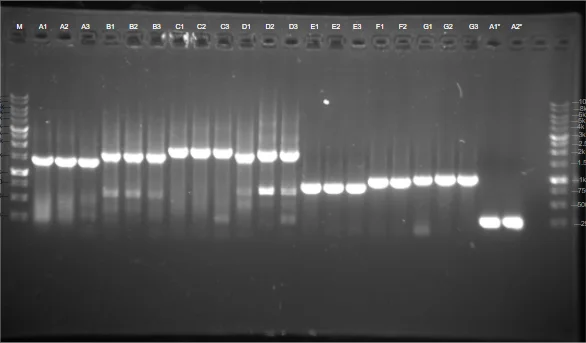
Figure 6. 8 July 2026. Level 1 and Level 0
screens on the same gel: Pveg-RBS0-CcaR-B0015
at 1,442 bp, PcpcG2-veg-EEBD-RBS0-csn::AmilCP-B0015
at 1,684, PliaG-RBS0-CcaSm3-B0015 at 1,991,
Pveg-EEBD-RBS0-csn::AmilCP-B0015 at 1,784,
and the starred lanes the rebuilt chromophore module at 2,231.
Cropped to the gel and scaled. No other adjustment.
LearnA day of extra work buys a donor whose sequence is known
TA cloning proved a fast and reliable way to generate verified
Level 0 material. Colony PCR alone can only say that an insert
of about the right length is present; it cannot rule out a point
mutation or a small indel introduced during amplification. So
fidelity was confirmed by sequencing, and no restriction digest was
run at this stage, because correct band size plus full-length
sequencing already answers both questions the digest would have
answered.
The cost was a day: colonies had to be picked, screened and
miniprepped before anything could be sequenced. What that day bought
was the end of the cycle 2 problem, where a failed assembly and a
PCR artefact looked the same on a gel.
04
Both pGEM-T Easy and every Level 1
destination vector carry ampicillin
Sophie C
ResultThe intermediate that fixed cycle 2 could not be selected against at Level 1.Changed nextEnter at Level 0 in the kit’s own pSTK-0C, on chloramphenicol.
Named failure
DesignA compatibility problem, found after the fact
pGEM-T Easy and the Level 1 destination vectors 1A, 1B, 1C and 1D all carry ampicillin resistance.
Carryover donor vector in a Golden Gate reaction is normally selected
away at the transformation step. With a shared marker it is not, so
background colonies survive selection and the plate stops telling you
anything. The redesign built each coding sequence straight from STK
Level 0 primers and dropped the pGEM-T Easy intermediate
altogether. Only the coding sequences that had not already been
cloned in cycle 3 were affected; the ones already in
pGEM-T Easy were still usable at Level 1.
BuildStraight into pSTK-0C
Coding sequences were amplified with primers carrying the full
Level 0 BpiI and Level 1 BsaI tail architecture and cloned
directly into the kit’s pSTK-0C CDS entry vector.
That put chloramphenicol on the donor and ampicillin on the
destination, so a correctly assembled Level 1 clone is now
distinguishable from carryover on the plate.
TestThree Level 0 screens on 14 August
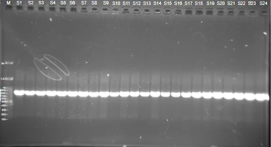
Figure 7.pSTK-0C-Csn-Lea, S1 to S24,
screened with Csn F and STK-seq-rv at 785 bp. S2, S10
and S16 went forward.
Cropped to the gel and scaled. No other adjustment.
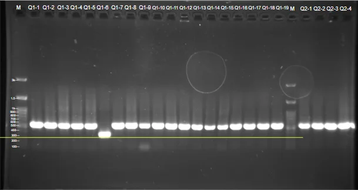
Figure 8.pSTK-0C-SamyQ-Bopep4-v2t1, Q1(1) to
Q1(19), and v2t2, Q2(1) to Q2(4), both at
536 bp with STK-seq-fw and STK-seq-rv. Q1-4, Q1-10 and Q1-19
went to liquid culture.
Cropped to the gel and scaled. No other adjustment.
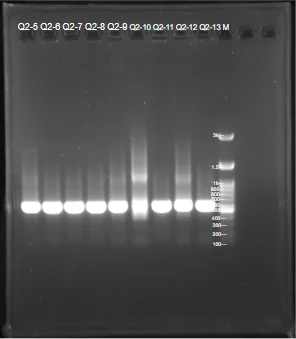
Figure 9. The second half of the same screen, Q2(5) to
Q2(13), also at 536 bp. Q2-5, Q2-7 and Q2-13 went forward.
Cropped to the gel and scaled. No other adjustment.
LearnOne problem solved, and a different one raised
The marker clash was gone. What replaced it was a worry about the
genome the modules were headed for. Several modules share the same
regulatory parts, Pveg, RBS0 and B0015, and
B. subtilis recombines homologous sequence readily. Once
all four modules sat in one cell, long stretches of identical
sequence could give recombination something to act on, and the
CcaS/CcaR signal path is exactly what would be damaged. That worry is
what cycle 6 was run on.
RedesignBreak the repeats
Diversify the promoter, ribosome binding site and terminator across
the modules so that no two of them share a long identical stretch.
05
Every light-gated cargo was also built constitutively, so a negative result has one explanation fewer
Unassigned · unwritten
ResultThe Pveg–EEBD–RBS0–CDS–B0015 series exists and is screened; the argument for it is not written.Changed nextThe constitutive series is what went into B. subtilis.
Unwritten
Unwritten · owner needed
The source document has this cycle as a single line,
All pveg-eebd-rbs0-cds-b0015 stuff. What follows is drafted from
the gels and construct names that exist; it needs an owner, and the
design reasoning has to come from whoever made the call.
DesignSwap the gated promoter for a constitutive one and change nothing else
Every cargo built behind PcpcG2-veg in module 4 was
also built behind Pveg, keeping EEBD, RBS0, the secretion
peptide fusion and B0015 identical. Testing a protectant and testing
a light switch at the same time means a negative result explains
nothing, and this series is what removes that ambiguity.
BuildThe same Golden Gate, into pSTK-1D and pSTK-EXP1
Level 0 parts entered pSTK-0 under BpiI, then the
promoter, RBS, cargo and terminator were joined under BsaI into the
Level 1 destination. The shuttle-vector versions of the same
constructs are on Sheet 07.
TestBoth promoters on the same gel, lane by lane
The 16 July panel screens the gated and constitutive versions of
the AmilCP cargo side by side. Lane 6 is
PcpcG2-veg-EEBD-RBS0-csn::AmilCP-B0015, clone
G3; lane 7 is
Pveg-EEBD-RBS0-csn::AmilCP-B0015, clone H10 at
about 2.2 kb. H10 went to sequencing and came back with no
mutations.
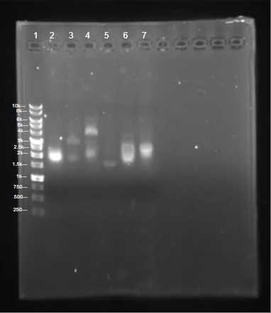
Figure 10. The output panel. Lane 2 is the CcaR
module; lanes 3 to 5 the Exp2 spacer series; lane 6 the
gated AmilCP construct, clone G3; lane 7 the constitutive
one, clone H10.
Cropped to the gel and scaled. No other adjustment.
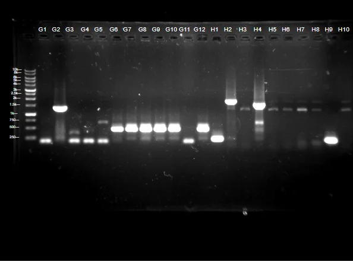
Figure 11. 25 July 2026. The LEA cargo in both
versions: G1 to G12 gated at 1,375 bp, H1 to H10
constitutive at 1,372 bp. G2 carried the right band and then failed its digest. That is
the finding in module 4.
Cropped to the gel and scaled. No other adjustment.
LearnUnwritten
What the constitutive series showed, and whether it changed anything
about how the gated series was built, has not been written.
06
Module 1’s repeats came out, and then the recombination premise did not survive
Sophie C
ResultThe rebuilt module sequenced positive on three clones, and half the reason for rebuilding it was retired by a conversation.Changed nextLevel 2 assembly, and then the induction run that has not happened.
Closed
DesignThird version of the STK design, aimed at sequence redundancy
To address the recombination risk raised in cycle 4, the
regulatory parts were diversified so that the four modules stopped
reusing identical promoters, ribosome binding sites and terminators.
Module 1 took the change, because it was the module whose
Pveg–RBS0–B0015 combination was repeated
elsewhere in the circuit.
BuildNew promoter, new ribosome binding site, new terminator, same coding sequence
Module
First build
Second build
1 · PCB production
Pveg – RBS0 – ho1:pcyA – B0015
PtagC+RBS – ho1:pcyA – L3S2P21
2 · light sensing
PlepA – RBS0 – ccaSm3 – B0015
PliaG – RBS0 – ccaSm3 – B0015
3 · transcriptional output
Pveg – RBS0 – ccaR – B0015
no change
4 · output
PcpcG2-veg – RBS0 – csn:cargo – B0015
cold double terminator, then reverted to B0015
TestEleven of twelve on the rebuilt module, and every colony of the galactosidase arm failed
A1 to A10 and A12 carried the expected 1,833 bp band; A1, A2 and A3 went to liquid culture and all three sequenced positive the next day.
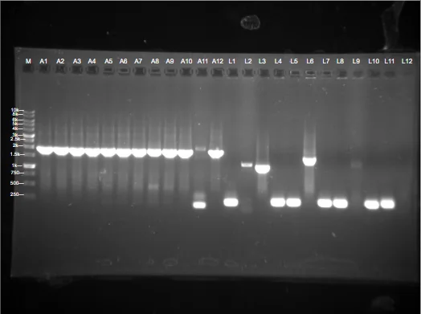
Figure 12. 30 July 2026. Group A is the rebuilt
chromophore module,
PtagC+RBS-Ho1:pcyA-L3S2P21, screened with
the BioBrick prefix and STK-seq-rv at 1,833 bp. Group L is
3P-GanA-Gala-B0015 at 3,626 bp with the EXP-seq
primers, and every L lane failed.
Cropped to the gel and scaled. No other adjustment.
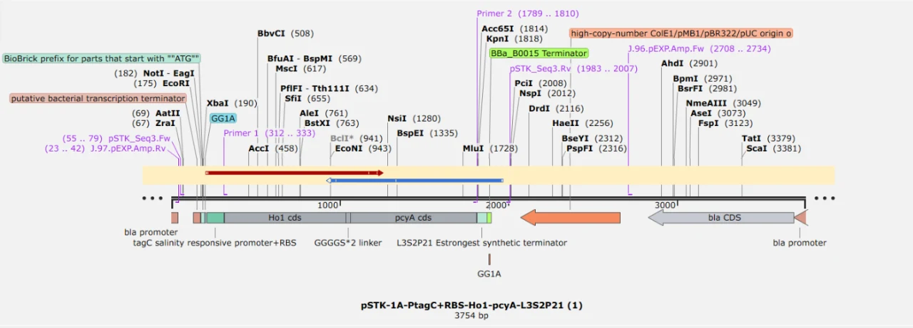
Figure 13. The rebuilt module as sequenced,
pSTK-1A-PtagC+RBS-Ho1-pcyA-L3S2P21,
3,754 bp. The tagC salinity-responsive promoter and RBS
arrive as one part, which is why RBS0 disappears from the name.
Cropped and scaled. No other adjustment.
LearnHalf the motive was retired by asking somebody who knew
The recombination worry that drove this cycle was put to Professor
Huang, and the answer was that recombination in Bacillus is not
the problem we thought it was. The team’s own note records the
consequence:
Module 4: Original terminator cold D (Failure) to B0015. Because
Professor Huang thinks recombination in Bacillus is not the
issue, we changed our terminator back to our original plan,
B0015.
So module 4’s terminator went back where it started, and
the cold double terminator survives as an artefact of a redesign we
undid. The other half of the motive stands on its own: module 1
sequenced clean on Pveg–RBS0 and gave no expression
signal, and the rebuild on PtagC and L3S2P21 is the part of
this cycle we kept. Both halves were written down as alternatives at
the time, and only one of them turned out to be a reason.
RedesignLevel 2, and a stoichiometry change
With module 1 rebuilt, the four modules went into Level 2.
Three consecutive Golden Gate rounds returned nothing with no design
change between them. On 28 August the insert-to-vector ratio was
swept at 1:5 and 1:7 and both returned positives; on 1 September
two ACDI clones were confirmed across three internal junctions at
once, pcyA F against CcaSm3 R at 375 bp, CcaS F
against CcaR R at 632 bp, and CcaR F against
CcaSm3 R at 661 bp. Three junctions is what separates a
complete circuit from a plasmid that happens to contain one module.
The joined construct has not been sequenced end to end.
Figure 14. 1 September 2026. The junction check on the
Level 2 ACDI assembly.
Scaled only.
06
The four modules as built, down to the clone identifier
Module 1 · PCB production · Sophie C
Pveg–RBS0 sequenced clean and expressed nothing, so the module was rebuilt on PtagC and L3S2P21
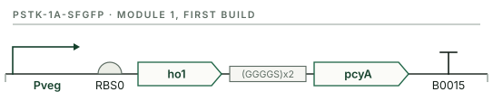
Figure 15. The first build. Sequencing on this one returned no signal.Figure 16. The second build, screened at 1,833 bp on 30 July and the one that went into Level 2.
The chromophore operon ho1:pcyA was not in the kit. It
was amplified as a single fragment off the existing MoClo construct with
Ho1 F annealing at the start codon of ho1 and
pcyA R at the 3′ end of pcyA. The
template was the gene-synthesis plasmid pTwist Amp High Copy;
Pveg was ordered from IDT as a fragment. Both went into
pGEM-T vectors first, were sequence-confirmed, and only then met BsaI.
Level 1 assembly joined Pveg, RBS0,
ho1:pcyA and B0015 into pSTK-1A-sfGFP with BsaI
and T4 ligase, transformed into E. coli DH5α. Colony
PCR on the Level 1 sets put A1(3), A1(4), A1(8), A1(9) and A2(6) at
about 1.9 kb, consistent with the operon sitting downstream of the
promoter and ribosome binding site. Those five went to sequencing.
Sequencing came back with no signal, so the promoter, ribosome binding site and terminator were all replaced.
That is the useful result. A regulatory combination that works in its
original design does not necessarily express at the same level in a
different backbone next to different parts, and chromophore supply is
what the whole light-sensing path depends on. The rebuild moved to
PtagC+RBS and the L3S2P21 terminator, screened at
1,833 bp on 30 July, with A1, A2 and A3 all sequencing positive.
Unwritten · Sophie C
The expected amplicon size for the Level 0 screen is marked
(add the band size) in the source text.
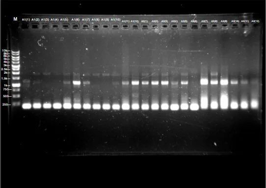
Figure 17. The Level 1 screen on the first build. A1(3),
A1(4), A1(8), A1(9) and A2(6) carry the expected band; the rest
either have nothing at that height or show non-specific product.
Cropped to the gel and scaled. No other adjustment.
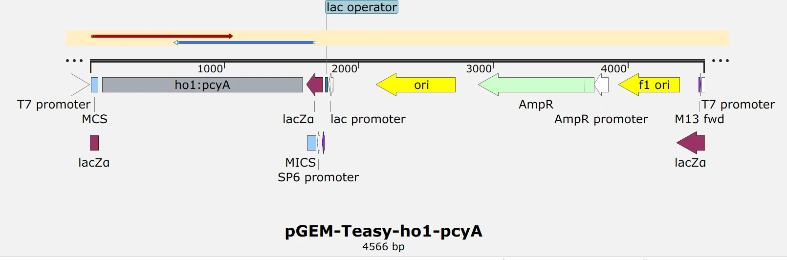
Figure 18. The sequence-confirmed donor,
pGEM-Teasy-ho1-pcyA, 4,566 bp. The T7 and SP6
promoters flanking the insert are the primer sites every
pGEM-T Easy screen on this page uses.
Cropped and scaled. No other adjustment.
Module 2 · Light sensing · Chloe
Two promoters built in parallel, and PliaG is the one sequencing confirmed
Figure 19. Both variants share everything except the promoter. PliaG is the one sequencing confirmed.
ccaSm3 is the engineered green-light photoreceptor and it was
not in the kit either. The same tail that worked on
ho1:pcyA was reused verbatim, with only the annealing region
changed: ccaSm3 F sits on the start codon,
ccaSm3 R on the 3′ end past the stop codon. The
amplicon went into pGEM-T to make the Level 0 part, then into two
parallel BsaI reactions with either PliaG or
PlepA, RBS0 and B0015, into pSTK-1B-sfGFP.
Building two promoters at once was the point. PliaG and
PlepA differ in strength, and until there is an induction curve
there is no way to know which one puts CcaS at a useful level, so both
exist and the choice stays open.
All six colonies across both constructs gave a single clean band at the expected size. Lane G3, an unrelated module 4 construct on the same gel, was flagged for a band at the wrong height.
Band size only says an insert of roughly the right length is present.
The PCR products went for sequencing.
PliaG-RBS0-CcaSm3-B0015 came back correct with no
mutations. The sequencing turnaround on this module was slow, and that is the
only reason it is not the first module in the record.
Unwritten · Chloe
Two gaps. The second way this module diverges from Castillo-Hair et al.
is written as Second… [xxx]. And the design text names sRBS2
and MF002 as the ribosome binding sites while both construct names say
RBS0; one of the two is wrong and the page currently follows the construct
names.
Figure 20. 25 June 2026. E1 to E3 are the
PlepA construct and F1 to F3 the PliaG one,
screened alongside the other three modules on the same gel.
Scaled only.
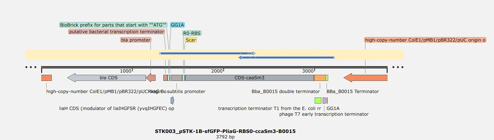
Figure 21.pSTK-1B-sfGFP-PliaG-RBS0-ccaSm3-B0015,
3,792 bp, as sequenced. The B0015 double terminator resolves as two annotated parts,
because that is how it is built.
Cropped and scaled. No other adjustment.
Module 3 · Transcriptional output · Chloe
One clone, #B2, was all this module ever needed
Figure 22. The regulator, on the same constitutive promoter as the first build of module 1. One clone, #B2, sequenced correct.
CcaR is the response regulator of the two-component pair. When the
activated photoreceptor CcaS-m3 passes it a phosphoryl group, CcaR binds
its cognate promoter and turns the light signal into transcription. It sits
on Pveg–RBS0–B0015 in
pSTK-1C-sfGFP, and the ccaR coding sequence was
amplified off the MoClo construct with the same tail as the other two.
Sequencing returned one correct construct, clone #B2.
This is the module that gave the least trouble. It is also the only one
that was never rebuilt: it kept Pveg, RBS0 and B0015 through cycle 6, so it
became the module the other three were diversified away from.
Unwritten · Chloe
The build sentence in the source stops at We assembled the parts into
the pSTK-1C-sfGFP destination vector using, and the learn field reads
We learned that.
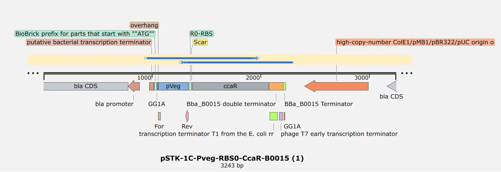
Figure 23.pSTK-1C-Pveg-RBS0-CcaR-B0015, 3,243 bp,
clone #B2 as sequenced.
Cropped and scaled. No other adjustment.
Module 4 · Output · Sophie C
Three protectant cargoes behind one light-gated promoter; the LEA arm came
back empty
Figure 24. The double-struck promoter marks the only light-gated part in the circuit. The cargo slot takes ACCD, AmilCP or Lea without any other change.
The output module expresses a protectant fused to a secretion signal
peptide, so the product leaves the cell. Which protectant was left open on
purpose: one of the project’s goals is that a user picks the cargo.
Several candidates were built in parallel on one shared architecture.
A promoter, either the light-gated PcpcG2-veg from MoClo or
constitutive Pveg from the kit; a ribosome binding site, EEBD
from MoClo combined with RBS0, or RBS0 alone; a secretion peptide fused to
the protectant coding sequence; and B0015.
#
Vector
Architecture
Where it got to
1
pSTK-1D-sfGFP
PcpcG2-veg–EEBD–RBS0–Csn:AmilCP–B0015
Clone G3 on the 16 July panel.
2
pSTK-1D-sfGFP
PcpcG2-veg–EEBD–RBS0–Csn:ACCD–B0015
I3 and I6 sequenced with no mutations.
3
pSTK-1D-sfGFP
PcpcG2-veg–EEBD–RBS0–Csn:Lea–B0015
Right band, empty vector on digest.
Unwritten · Sophie C
The source says four constructs were designed and then lists three. Either
a fourth construct is missing from the table or the count is wrong.
The overhangs are what make the assembly directional
Every forward primer in this module shares the CTGA and
GAGG Level 0 pair for BpiI entry into
pSTK-0. The inner BsaI overhangs are what decide position.
PcpcG2-veg R carries ATGT, which
is the reverse complement of the ACAT on
EEBD F, so the promoter and the downstream ribosome
binding site can only join one way round. Csn F carries
TATG, putting the secretion peptide’s start codon exactly
at the coding-sequence position. And ACCD R,
AmilCP R and Lea R all carry
TGTC, because every protectant ends at the same
coding-sequence-to-terminator junction. That shared junction is what
makes the cargo interchangeable.
Clone G2 had the right band on colony PCR and returned the dropout cassette on digest, which means the vector was empty.
The ACCD arm went the other way. I3 and I6 carried the expected
1,588 bp band on 22 July, went to liquid culture, and sequenced
with no mutations. On the 27 July digest, plasmids I1 and J9 cut where
they should, confirming both the site and the orientation of the insert,
and J9 sequenced clean.
The empty LEA construct stopped mattering shortly afterwards. ACC deaminase
had been chosen as the cargo to carry into light-plate and reactor testing,
so a Level 2 Csn:Lea was no longer on the path. What the plant screen
can and cannot say about any of these cargoes is on
Plants.
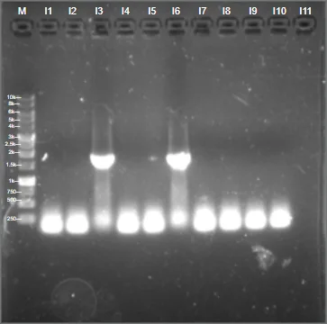
Figure 25. 22 July 2026.
PcpcG2-veg-EEBD-RBS0-Csn:ACCD-B0015 at
1,588 bp with the PcpcG2 forward and ACCD reverse
primers. I3 and I6 are the two clones that went forward.
Cropped to the gel and scaled. No other adjustment.
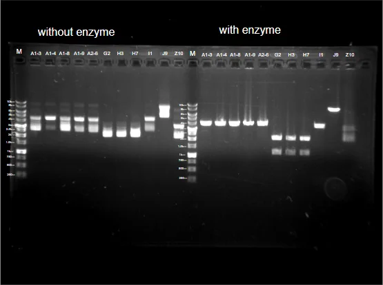
Figure 26. 27 July 2026. Uncut against cut, side by side on one gel. Without both halves a
digest says very little.
J9 and I1 cut as predicted; G2 returned the dropout cassette.
Cropped to the gel and scaled. No other adjustment.
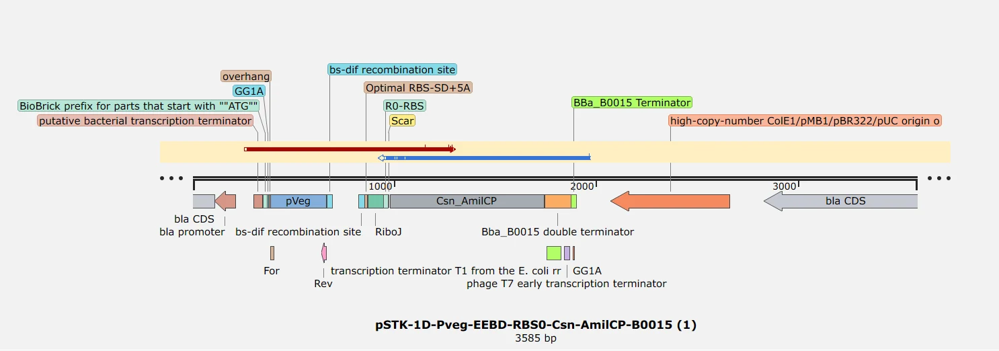
Figure 27. The chromoprotein arm as sequenced,
pSTK-1D-Pveg-EEBD-RBS0-Csn-AmilCP-B0015,
3,585 bp. EEBD resolves into its parts on the map: two bs-dif
recombination sites bracketing a terminator, then RiboJ and the
ribosome binding site.
Cropped and scaled. No other adjustment.
07
Five constitutive constructs, and the galactosidase arm failed on every colony
Figure 28. The shuttle build. Same cargo as module 4, no light
gate, and a vector that replicates in both organisms.
pSTK-EXP1-sfGFP is the kit’s shuttle vector: it replicates
in E. coli, where the cloning happens, and in
B. subtilis, where the protein has to be made. Building every
cargo behind a constitutive promoter in that vector is what lets the protectant
be tested on its own. A construct that has to be induced by light before it
makes anything gives a negative result two possible causes, and there is no
induction curve yet to separate them.
#
Architecture
Purpose
Where it got to
1
Pveg–EEBD–RBS0–SamyQ-TAT-HA-AmilCP–B0015
Visible reporter
Built.
2
Pveg–EEBD–RBS0–Csn:ACCD–B0015
The cargo carried forward
J9 sequenced clean, 27 July.
3
Pveg–EEBD–RBS0–spacer–GanA-Gala-6×His–B0015
Galactosidase arm
All twelve L lanes failed, 30 July.
4
Pveg–EEBD–RBS0–Csn:Lea–B0015
LEA protein
Screened at 1,372 bp, 25 July.
5
Pveg–EEBD–RBS0–SamyQ-Bopep4-v2t1–B0015
The designed peptide
Level 0 at 536 bp, 14 August.
Constructs 1 to 4 were built in the shuttle vector so the same plasmid could
move from E. coli into B. subtilis once it was
confirmed. Construct 5 carries BoPep4, whose design history, including
five claims the team retracted in writing, is on
Peptide Design.
Unwritten · Sophie C
The learn field for this track reads After many tests of different
protectants. The BoPep4 reverse primer has its BpiI and BsaI overhangs
recorded, GAGG and TGTC, and no sequence.
Unwritten · Olivia, Sophia
Protectant design: the mutation, truncation and codon-optimisation work that
produced these cargoes, written from the wet lab side.
B. subtilis takes the vector between 2.0 and 2.3 kV, and the blot on the sprayed culture reads negative
B. subtilis is not easy to electroporate. Cells were grown in LB
with 0.5 M sorbitol to OD600 0.85 to 0.95, washed four times in ice-cold
sorbitol and glycerol buffer, and concentrated fortyfold to 1 to
1.3 × 1010 cfu/mL. Pulses were delivered across
a 0.2 cm gap at 25 µF.
The first attempt did not survive its first two pulses. At 2.0 and
1.8 kV with the resistance set to infinity the cuvette arced and the time
constant read zero. Putting 300 Ω in parallel fixed it and gave a
6.7 ms time constant, and every later run used that setting.
Transformation efficiency rises from 2.0 to 2.3 kV and collapses by 2.5 kV.
Date
Field
Colonies, diluted
Colonies, undiluted
22 May
2.0 kV
31
309
22 May
2.1 kV
0
302
22 May
2.2 kV
49
405
23 May
2.1 kV
1,323 and 1,003
23 May
2.3 kV
1,606 and 424
23 May
2.5 kV
37 and 203
Figure 29. 2.1 kV. Nought colonies on the diluted plate against
302 undiluted; the counts are written on the plates in the photograph.
Scaled only.Figure 30. 2.2 kV, 49 against 405, the best yield of the first
sweep.
Scaled only.Figure 31. 2.5 kV, about 37 colonies. Past 2.3 kV the
yield collapses.
Scaled only.
At the protein level the record is thinner and it does not say what we hoped.
Three Western blots were run, on 2, 7 and 24 August. The 24 August
blot is the only one whose ladder resolves well enough to assign a molecular
weight, and it carries exactly one band: a sharp, saturated signal at roughly
41 kDa in the lane loaded with the 18 August culture. The lane loaded
with the 23 August culture, the material that had actually been sprayed
onto plants, is blank.
Figure 32. 24 August 2026, the membrane under white light. Both prestained ladders resolve all eight bands from 180 down to
28 kDa, and that is what lets the next panel carry a weight
assignment at all.
Scaled only.Figure 33. The exposure of the same membrane. One band at about
41 kDa in the 18 August lane; the 23 August lane is empty.
The bright patch immediately above the band is an air bubble under the
membrane, and it is a reason to treat even this result carefully.
Scaled only. No brightness, contrast or gamma adjustment.
The team’s own minute of 26 August states the consequence plainly:
Originally two day pre-treatment (8/23, 8/24), did Western blot and found out
there’s no ACCD in the B Sub. we are spraying the plants with.
The blot is a negative result about the material that mattered most and it
arrived after the plant treatment had started. The 41 kDa band on the
earlier culture sits above the roughly 36 kDa recorded for bare ACC
deaminase, which is the direction a signal-peptide fusion carrying a
6×His tag should move it, but the expected mass of the fusion as built
was never computed, so that is a reconciliation and not a confirmation.
Unwritten · Chloe
The learn field for this cycle is empty. And the plan calls for comparing
transformation efficiency between WB800N and 168; that comparison has never
been run, WB800N appears exactly once in the whole wet lab archive, and every
number above is strain 168.
08
No induction run has happened yet; it is the next thing on the bench
Six cycles of cloning produced four sequence-confirmed modules and a
junction-checked Level 2 plasmid. Every one of those cycles was about
getting DNA into the right vector, and none of them tested whether the circuit
does what it was designed to do. That is the whole of what comes next.
Does green light switch it on?
A light-plate apparatus run on the Level 2 strain, green against dark,
reading the output cargo. Until that exists, every sentence on this page
about the switch is a statement about the design.
Which promoter does module 2 want?
PliaG and PlepA both exist. A dose-response curve is
what picks between them, and it is the same experiment as the one above.
Is the Level 2 construct clean?
Three junctions say four modules are joined in the right order. Sequencing
the joined plasmid end to end is what would let us say it carries no
mutation.
Does the strain actually make protectant?
One blot lane out of three carried a band, and it was not the lane that
went onto plants. Every batch that touches a plant should be blotted first,
and that gate has been stated and not yet applied.
WB800N or 168?
The plan calls for the comparison and it has never been run. All existing
numbers are strain 168.
Where the rest of the engineering record lives: the perfusion reactor and the
in-line photometer are on Hardware and
Bioreactor Calculations; the BoPep4
design cycles are on Peptide Design; the
agar, hydroponic and soil assays are on Plants.
09
References
Haller, D. J., Castillo-Hair, S. M., & Tabor, J. J. (2025). Optogenetic
control of B. subtilis gene expression using the CcaSR system.
Methods in Molecular Biology, 2840, 1–17.
https://doi.org/10.1007/978-1-0716-4047-0_1
Unwritten · everyone
One reference is entered. The rest go into the shared Zotero library,
GEMS-Taiwan 2026 → Wetlab, in APA 7, and come onto this page from
there. In-text citations follow the same style, for example (Haller et al.,
2025). The SubtiToolKit, pGEM-T Easy, the MoClo 2.0 standard and the
Castillo-Hair 2019 paper all need entries.